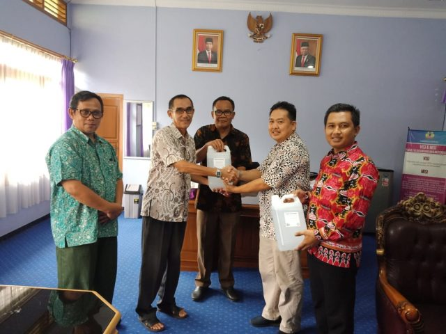

Cegah COVID-19 IKA FKIP UNILA Beri Bantuan Hand Sanitizer Ke Kampus
Dalam rangka pencegahan dan antisipasi penularan virus corona (Covid-19) Ikatan Keluarga Alumni FKIP Unila memberikan bantuan Hand Sanitizer kepada Dekan FKIP unila, Jum’at (20/03/2020).
IKA FKIP Unila dalam hal ini diwakili oleh Ketua Harian Albet Maydiantoro dan Wakil Ketua III Ersontowi berkunjung dan menghantarkan langsung paket isi ulang Hand Sanitizer di kampus setempat dan diterima oleh Dekan FKIP Unila di dampingi oleh Wakil dekan I & Wakil Dekan II.
Mewakili Ketua Umum Ibnu Hasan dalam pertemuan tersebut Ersontowi menyampaikan penyerahkan paket Hand Sanitizer untuk isi ulang sebagai bagian upaya membantu pencegahan penyebaran virus corona di lingkungan FKIP unila.
Ditambahkan Albet Maydiantoro, kegiatan ini merupakan upaya awal bersama secara sinergi untuk mencegah penyebaran virus, utamanya untuk civitas akademika, pegawai, dan terkhusus bagi calon-calon alumni yang masih aktif hadir dilingkungan kampus.
